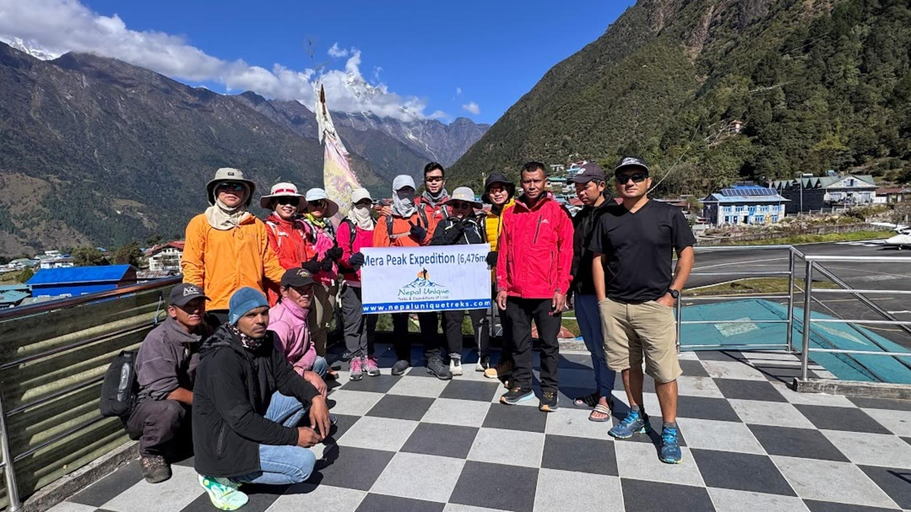
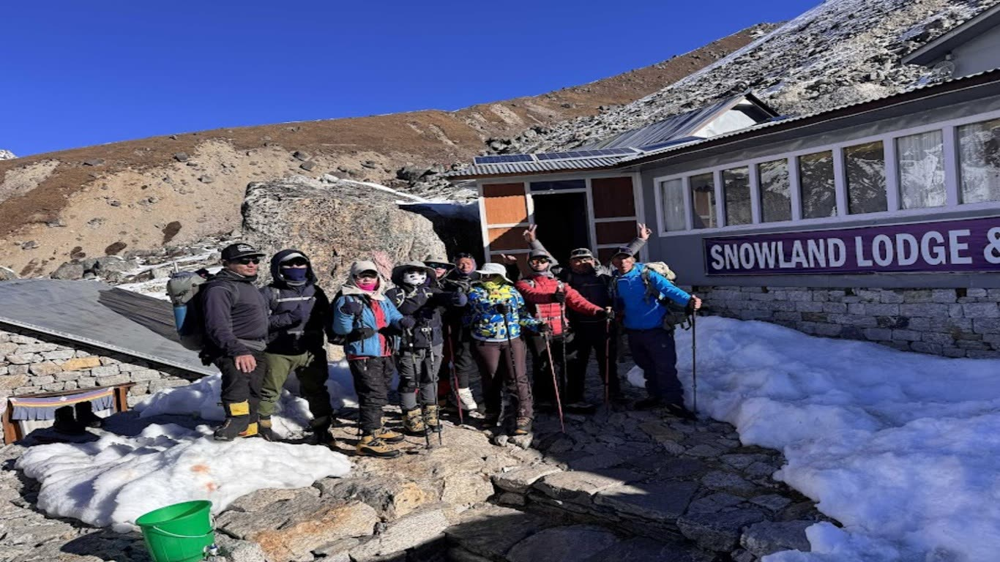
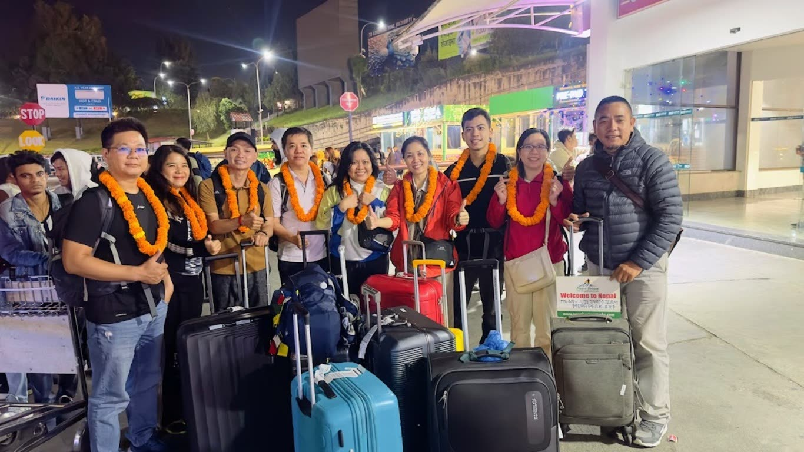
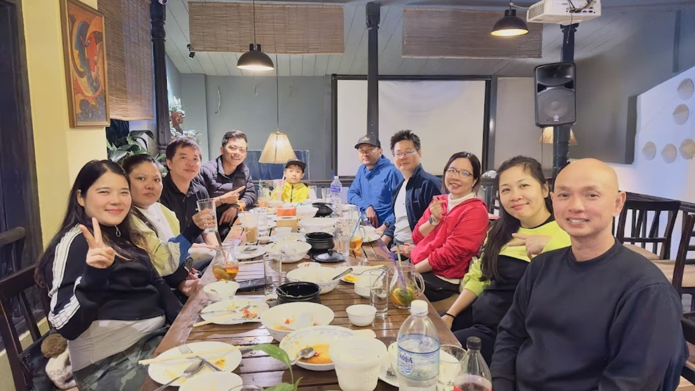
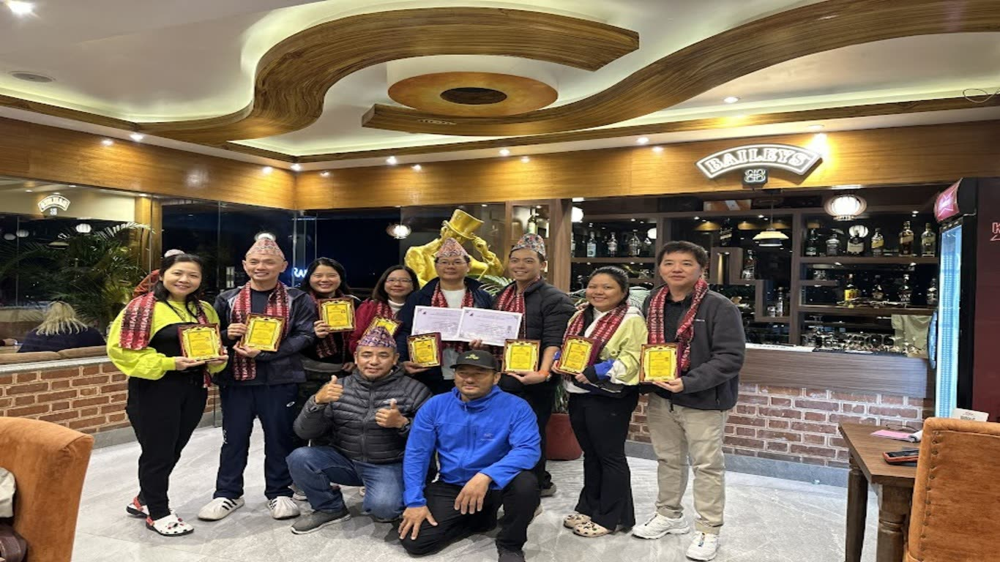
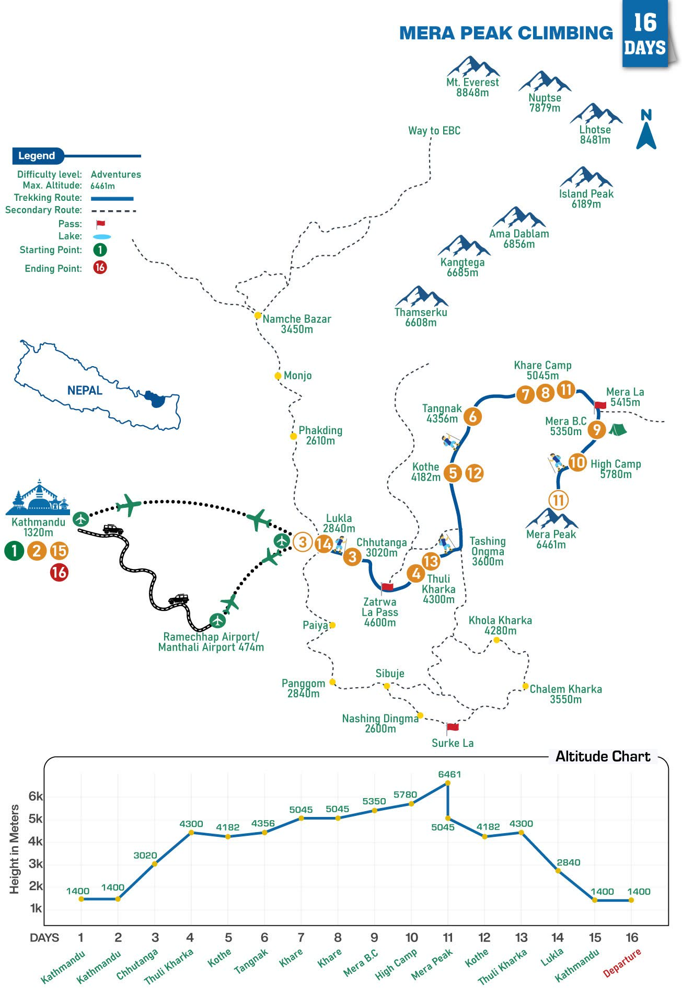

Mera Peak Climbing
The Mera Peak Climbing is one of Nepal’s most rewarding high-altitude adventures, offering aspiring mountaineers the chance to stand on the summit of the highest trekking peak in Nepal at 6,476 meters. Known for its breathtaking Himalayan panorama and relatively non-technical terrain, the Mera Peak Expedition is the ideal choice for climbers seeking their first Himalayan climbing experience.





Key Trip Facts
Trek Overview
Trip Highlights
Mera Peak Climbing Overview
The Mera Peak Climbing is one of Nepal’s most rewarding high-altitude adventures, offering aspiring mountaineers the chance to stand on the summit of the highest trekking peak in Nepal at 6,476 meters. Known for its breathtaking Himalayan panorama and relatively non-technical terrain, the Mera Peak Expedition is the ideal choice for climbers seeking their first Himalayan climbing experience. With the expertise of Nepal Unique Treks, the journey becomes safe, well-organized, and filled with authentic Sherpa hospitality.
The classic Mera Peak Trek begins with a scenic flight to Lukla and continues through lush forests, remote valleys, and traditional mountain villages before entering the alpine landscapes of the Hinku Valley. This gradual approach ensures proper acclimatization, preparing climbers for the high-altitude ascent. As you approach Khare, the gateway to the mountain, the dramatic views of Everest, Lhotse, Makalu, and Cho Oyu begin to unfold, setting the tone for an unforgettable Mera Peak Climb Nepal experience.
Our Mera Peak Climbing Package is designed to offer flexibility, safety, and comfort. It includes acclimatization days, pre-climb training, and professional guidance from certified Sherpa climbers. During the training session at Khare, climbers learn essential techniques such as using crampons, handling ropes, and glacier travel—ensuring confidence before moving toward high camp. The final ascent from high camp to the Mera Peak Summit is a thrilling experience, with the sunrise illuminating five world-class Himalayan giants as you make your way to the top.
When planning your adventure, understanding the Mera Peak Cost is important. Nepal Unique Treks offers transparent, competitive pricing that includes permits, domestic flights, accommodation, meals, climbing gear, guides, and porter support. Our goal is to provide exceptional value without compromising safety or comfort.
With years of expertise in Himalayan adventures, Nepal Unique Treks has become a trusted operator for the Mera Peak Guided Climb and the broader Mera Peak Expedition Nepal experience. Our highly experienced guides, carefully crafted itineraries, and personalized service ensure that every climber receives the best possible chance of reaching the summit.
Whether you are a beginner looking to climb your first 6,000-meter peak or an experienced trekker seeking a high-altitude challenge, Nepal Unique Treks delivers a professional, safe, and unforgettable Mera Peak adventure in the heart of the Himalayas.
Why Choose Nepal Unique Treks for Mera Peak Climbing?
- 20+ years of Himalayan guiding experience
- Excellent success rate on Mera Peak
- Safe acclimatization-based itinerary
- Professional Sherpa guides with climbing certification
- High-quality equipment & reliable logistics
- Personalized small-group or private expeditions
With a skilled mountain team and years of experience, we ensure your Mera Peak Guided Climb is safe, comfortable, and successful.
Mera Peak Climbing in Nepal
The Mera Peak Climbing in Nepal is one of the most rewarding Himalayan adventures, taking you to the summit of the highest trekking peak at 6,476 meters. Located in the remote Hinku Valley of the Everest region, the climb offers breathtaking views of Everest, Lhotse, Makalu, Cho Oyu, and Kanchenjunga. This expedition combines a scenic trekking route, Sherpa culture, and a non-technical climb suitable for fit trekkers aiming to reach their first 6,000-meter peak. With Nepal Unique Treks, climbers receive expert guidance, proper acclimatization, and a safe, well-organized Himalayan experience.
Best Time for Mera Peak Climbing
The best time for Mera Peak Climbing is during the spring (March–May) and autumn (September–November) seasons, when the weather is stable, skies are clear, and climbing conditions are ideal. During these months, temperatures at high altitudes remain manageable, and the snow level is perfect for safe ascent. Spring offers blooming landscapes and excellent visibility, while autumn provides crisp air and calm winds. These periods ensure the highest success rates, making them the most popular choices for Mera Peak expeditions.
Mera Peak Difficulty Level
The Mera Peak is graded as a moderately challenging trekking peak suitable for fit trekkers with good endurance. The climb does not involve technical rock climbing, but the high altitude, cold temperatures, and long summit day demand strong physical preparation. Basic mountaineering skills, such as using crampons, an ice axe, a harness, and fixed ropes, are necessary. Proper acclimatization and guidance from an experienced Sherpa climbing team significantly increase safety and success.
Mera Peak for Beginners
Mera Peak is ideal for beginners who wish to climb their first 6,000-meter Himalayan summit. The route is non-technical, and Nepal Unique Treks provides full training on glacier travel, rope techniques, and climbing equipment before the ascent. As long as climbers are physically fit and able to trek long distances at altitude, they can safely attempt Mera Peak. It is one of the best entry-level peaks for future expeditions like Island Peak, Lobuche East, or even 7,000-meter climbs.
Mera Peak Climbing Training Guide
Training for Mera Peak should begin at least 8–12 weeks before the expedition. A balanced program includes cardio exercises (running, hiking, cycling), strength training for legs and core, altitude simulation if available, and long hikes with a weighted backpack. Practicing with trekking boots and building stamina are essential. Nepal Unique Treks also conducts pre-climb training in Khare, teaching climbers how to use crampons, ice axes, ropes, and harnesses to ensure a safe ascent.
How Hard Is Mera Peak Climbing?
Mera Peak climbing is moderately challenging due to long trekking days, high altitude, and cold summit conditions. The final ascent involves walking on glaciers with rope support and a steady climb to the summit ridge. The challenge mainly comes from altitude rather than technical difficulty. With proper acclimatization, physical fitness, and support from Nepal Unique Treks, most determined trekkers can successfully reach the summit.
Mera Peak Climbing Itinerary: Day by Day
16 Days program for Mera Peak Climbing. Daily timings and sequences remain flexible according to weather, flight operations, and group pace.
Day 1: Arrival in Kathmandu, 1345m. Transfer Hotel 7 km drive from Airport to Hotel
Approx. 1,345 m / 4,413 ft
Upon arrival at Tribhuvan International Airport in Kathmandu (1,400m), a representative from Nepal Unique Treks will welcome you and transfer you to your hotel in Thamel. After check-in, you may rest or explore the bustling streets filled with shops, cafés, and trekking gear outlets. We also conduct a short briefing about the trek, climbing plan, and equipment checklist for your upcoming Mera Peak adventure.
Day 2: Trip preparation and Kathmandu Valley Sightseeing with City Guide, 1345m.
Approx. 1,344 m / 4,409 ft
This day is dedicated to final preparations. You will meet your trek leader, check climbing gear, and ensure all permits—such as the Makalu Barun National Park entry and Mera Peak climbing permit—are arranged. If anything is missing, Kathmandu has excellent stores for renting or purchasing equipment. In the afternoon, you can enjoy some sightseeing or relax before the adventure begins.
Day 3: Kathmandu to Ramechhap Airport and Fly to Lukla2810m and Trek to Chhutanga (3,020m)
Approx. 3,020 m / 9,908 ft
The journey towards the Mera Peak Climbing route begins on the third day with a drive from Kathmandu to Ramechhap. Our drive begins as early as around 1 A.M and takes about 5 hours to reach the Ramechhap Manthali Airport. As you reach there, the guides will take you to the airport from where we fly to Lukla, the starting point of any Everest region trek. After an early morning flight from Ramechhap to Lukla (2,840m), your trek starts with a gradual ascent through lush forest and small Sherpa villages. The trail climbs steadily toward Chhutanga (3,020m), located in a quiet forested area below the Zatrwa Pass. This short first day helps with acclimatization.
Day 4: Chhutanga to Thuli Kharka (4,300m) via Zatrawa La (4,610m), 10 km, 6/7 hrs
Approx. 4,610 m / 15,125 ft
Today is a challenging ascent as the trail climbs steeply toward the high Zatrawa La Pass at 4,610m. The climb offers excellent views of Kongde Ri, Numbur Himal, and the Dudh Kosi Valley. After crossing the windy pass, the trail descends to Thuli Kharka (4,300m), a yak-pasture area surrounded by alpine landscapes.
Day 5: Thuli Kharka to Kothe (4,182m) Trekking Distance 12 km, Walking Time 5–6 hours
Approx. 4,182 m / 13,720 ft
The trail descends through dense rhododendron and pine forests as you enter the Hinku Valley. With beautiful views of Mera Peak and surrounding ridges, you continue trekking along a pleasant forest path to reach Kothe (4,182m), a small settlement known for its dramatic valley setting.
Day 6: Kothe to Thangnak (4,356m) Trekking Distance 8 km, Walking Time 4–5 hours
Approx. 4,356 m / 14,291 ft
Following the Hinku River upstream, the route passes through remote yak herder settlements and valleys covered with glacial moraines. You will gradually gain altitude as you approach Thangnak (4,356m), a summer grazing area with spectacular views of Kusum Kanguru and the Mera Glacier.
Day 7: Thangnak to Khare (5,045m) Trekking Distance 7 km, Walking Time 3–4 hours
Approx. 5,045 m / 16,552 ft
Today’s trek is short but involves a steady climb. You cross lateral moraines and ascend toward Khare (5,045m), the last settlement before Mera Peak. Khare offers jaw-dropping views of the massive North Face of Mera Peak and serves as an important acclimatization point.
Day 8: Acclimatization Day in Khare (5,045m)
Approx. 5,045 m / 16,552 ft
This day is crucial for altitude adaptation. After breakfast, your climbing guide will conduct a training session on how to use crampons, ice axes, rope systems, and harnesses. A short acclimatization hike nearby (up to 5,300–5,400m) helps prepare your body for the higher elevation of Mera Peak. Rest and hydrate well for the next day’s ascent.
Day 9: Khare to Mera Base Camp (5,350m) Trekking Distance 4 km, Walking Time 3–4 hours
Approx. 5,350 m / 17,552 ft
Leaving Khare, the trail climbs steeply onto the glacier. After putting on mountaineering gear, you traverse the gentle glacier toward Mera Base Camp (5,350m). The campsite lies below the Mera La Pass and provides sweeping views of Mera Peak and the surrounding snowfields.
Day 10: Mera Base Camp to High Camp (5,780m) Trekking Distance3 km, Walking Time 4–5 hours
Approx. 5,780 m / 18,963 ft
You ascend gradually from Mera La to reach High Camp (5,780m), located on a small outcrop offering incredible views of Everest, Makalu, Cho Oyu, Lhotse, and Kanchenjunga. The final part of the trail is steep but safe, and your guide ensures progress at a comfortable pace. Sunset views from High Camp are spectacular.
Day 11: Summit Mera Peak (6,461m) & Descend to Khare (5,045m) Total Distance 12–13 km Summit Time 8–10 hours Descent Time: 3–4 hours
Approx. 6,461 m / 21,198 ft
Your summit push begins early—usually around 2:00 AM. Roped together, you steadily climb the glacier using headlamps. As dawn breaks, the Himalayan panorama becomes breathtaking. The final section of the summit involves a short, steep snow slope. Reaching the Mera Central Summit (6,461m), you are rewarded with one of the finest views in the Himalayas. After celebrating and taking photos, you descend safely back to High Camp and continue down to Khare for a well-earned rest.
Day 12: Khare to Kothe (4,182m) Trekking Distance 15 km, Walking Time 6–7 hours
Approx. 4,182 m / 13,720 ft
Enjoying easier downhill trails, you retrace your route to Kothe. The lower altitude makes the trek more comfortable, and you can celebrate your successful summit with warm meals and a relaxed evening.
Day 13: Kothe to Thuli Kharka (4,300m) Trekking Distance 12 km Walking Time 5–6 hours
Approx. 4,300 m / 14,108 ft
The trail climbs back through forested sections and ridge lines as you make your way to Thuli Kharka. From here, you can again enjoy excellent views of the Hinku Valley and Mera Peak.
Day 14: huli Kharka to Lukla (2,840m) via Zatrwa La (4,610m) Trekking Distance13 km, Walking Time 7–8 hours
Approx. 2,840 m / 9,318 ft
Crossing the Zatrwa La Pass once again, you descend toward Lukla. The final day of trekking feels rewarding as you enjoy the last views of the mountains behind you. In Lukla, you celebrate the successful completion of your Mera Peak climb with your crew.
Day 15: Fly back to Ramechhap and drive to Kathmandu.20 m flight, 5 hrs drive.
Approx. 1,345 m / 4,413 ft
After completing your incredible Mera Peak adventure, the day begins with a short yet thrilling 20-minute scenic flight from Lukla to Ramechhap. The flight soars above terraced hills, winding rivers, and Himalayan foothills, and you get a chance to take a final look at the majestic Himalayas. As you land in the Manthali Airport (Ramechhap), our guides take you to the bus stop. From here begins an adventurous drive towards Kathmandu. Very soon, you can sense yourself returning to the noisy and urban city life, and the bus directly take you directly to the hotel. Check into your hotel room before freshening up and taking a quick stroll around the nearby areas. In the evening, the Nepal Unique Treks & Expeditions team invites you for a farewell dinner. After that, you can go for the last sleep in Nepal.
Day 16: Final departures to home.
Approx. 1,345 m / 4,413 ft
Today, we officially mark the end of the 18-Day Mera Peak Climbing Package. You will have breakfast in the hotel, and after that, our local representatives will drive you to the Tribhuwan International Airport. That's where the guides offer you a final farewell with a strong belief to meet you again for another adventurous peak climbing in Nepal.
What is Included (Regular Package)
What is Excluded
Booking Dates & Availability
Packing List for Mera Peak Climbing
Fixed ropes, ice bars, and group climbing hardware are arranged by our Sherpa climbing crew; personal technical gear can be checked in Kathmandu.Technical Mountaineering Hardware (5 items)
Summit Apparel & Protection (4 items)
High-Camp Sleep & Approach (3 items)
Read before you book: Mera Peak Climbing
Practical logistics derived directly from this package's route facts, inclusions, and elevation profile.
Accommodation & Meals (Hotel, Lodge & Tea House, Camp)
Accommodation follows the package grade (Hotel, Lodge & Tea House, Camp) in Kathmandu and along the Everest route. Check your package Includes section for included meals and Kathmandu hotel nights.
Permits & Local Logistics
Transportation is arranged via Flight & Private Car. Applicable permits listed in the package inclusions are arranged by Nepal Unique Treks prior to departure.
Route Difficulty & Elevation (6,461 m)
Mera Peak Climbing is rated Adventurous with a maximum elevation of 6,461 m. Follow your guide's pacing and stay hydrated throughout the 16 Days itinerary.
Best Time to Visit (Spring (March – May) Autumn (Sep – Nov))
Recommended operating season on the source page: Spring (March – May) Autumn (Sep – Nov). Additional official notes from the source page follow below.
Traveller Useful Information
Mera Peak Climbing is considered to be a trekking peak, so there are two ways to see its difficulty level. If you see this package as a trekking journey, it is more difficult than any other Trekking in Nepal. However, if you see it as a peak climbing journey, it is comparatively easier than any other peak climbing in Nepal. Nevertheless, if we talk as a whole, the Mera Peak Climb is considered to be a moderately difficult trail. Therefore, the trekkers must possess good physical fitness, mental stamina, and basic mountaineering skills to ascend this trail. Besides, you shall also be prepared with high-altitude acclimatization as we will ascend to altitudes of 4000 to 5000 meters.
On some select days, we also have to walk for about 7 to 8 hours. Besides, the final push to the summit from High Camp also stands as the most difficult journey, demanding the use of crampons, ice axes, and fixed ropes, particularly on the 30–40-degree snow slope near the top. Well, even though you do not need advanced climbing skills, we recommend that you get some prior experience and understanding of the mountaineering gear. If you follow all of these rules, the Mera Peak Climbing journey might not be very difficult at all.
The best seasons to go for the Mera Peak climb during spring (March to May) and Autumn (September to November). During these seasons, you can expect warmer temperatures, blooming rhododendrons, and clear skies, making the climb more scenic and comfortable. Besides, these seasons are also considered the most popular season for mountaineering across Nepal. This is due to longer daylight hours and generally favourable high-altitude conditions throughout these months.
Besides, the trails also stay dry due to light rainfall, with crisp air offering outstanding views of the Himalayas. Both of these seasons, avoid extreme cold and heavy snow of winter, as well as the slippery and cloud-covered trails of the monsoon. We do not recommend you to go for this trek during other seasons, like monsoon and summer, as you can go through many obstacles and difficulties due to heavy rainfall and slippery routes.
Preparing for the Mera Peak trek requires a mix of physical training, gear planning, altitude awareness, and mental readiness. As we know that the trail ascends to an altitude of 6,461 meters above sea level, crosses several ascents and descents, and over the alpine terrains. Therefore, we recommend the trekkers to plan their fitness regime at least 3 to 4 months in advance.
Here is how you can prepare yourself best for the Mera Peak Climbing package:
Physical Training
Focus on cardiovascular exercises like running, jogging. swimming, hiking, or even cycling).
Make sure that your training includes strength training. especially for legs and core.
Go for some shorter hikes and multi-day treks to acclimate your body to the higher altitude.
Practice with a loaded backpack to stimulate trekking conditions and prepare accordingly.
Technical Skills
Learn the basics of mountaineering, like using crampons, an ice axe, ropes, etc.
Make sure to attend a pre-climb training session, which our guides will provide you with during the trek.
Do a little study on the map of Mera Peak Climbing to ensure a better understanding and strategy building while ascending.
Mental Preparation
Practice meditation to keep your mental health good and be mentally prepared for the high-altitude, remote conditions.
Be prepared to face long trekking days, cold weather, basic facilities, and some pressure as well.
Do not take negative news as a discouraging factor. Just follow the guiding team and listen to the instructions that they provide.
Acclimatization and Altitude
Make sure that the itinerary you choose has a couple of acclimatization or rest days.
Keep yourself well hydrated throughout the trek and make sure to maintain a slow and steady pace.
Study about the signs of altitude sickness and if you sense any within yourself, talk ot the guides immediately.
Permits and Documents
Make sure to obtain all the required permits a couple of days before beginning the journey.
Though not mandatory, we recommend that you obtain a trekking permit that covers an altitude of over 6000 meters.
Also, carry some documents that have your basic information, like name, number, the immediate person to contact, etc.
If you make sure to prepare accordingly for the Mera Peak Climbing journey, the Nepal Unique Treks & Expeditions team also ensures a highly adventurous, exciting, and insightful trekking experience. Moreover, we also ensure very less to no obstacles and difficulties during the entire journey.
Food and Accommodation play an important role in making the Mera Peak Climbing journey successful. The Nepal Unique Treks & Expeditions team understands the importance of proper food and accommodation, Therefore, we make sure to arrange the best food and accommodation for anyone coming for a trek or peak climbing in Nepal.
Here is a detailed breakdown of the food and accommodation that you can expect during the Mera Peak Climbing journey:
Accommodation during the trek
In Kathmandu, Nepal, Unique Treks & Expeditions arranges a three-star level hotel for your accommodation. This hotel offers all the basic amenities along with other facilities like WiFi, internet, and A/C., and an attached bathroom.
As we reach the trekking journey, the accommodation shifts from 3 3-star level hotel to teahouses and guesthouses. These guesthouses offer modest rooms with twin beds, shared bathrooms, and communal dining areas. Also, they are kept clean and hygienic with proper safety concerns.
At the Mera Peak High Camp, we will also have to spend a night in a tent set up by the Sherpas. These tents consist of foam mattresses and sleeping pads.
Food during the Mera Peak Climb
Trekkers can expect simple but hearty and hygienic food throughout the trail. Our package covers a three-time meal throughout the journey, which includes Breakfast, Lunch, and Dinner.
Common menu items in the route include Dal Baat (Nepali Khana Set), Noodles. fried rice, pasta, momo, pancakes, eggs, toasts, porridges, etc.
Besides, they also provide tea or coffee in almost every tea house and lodge.
This is one of the things that requires pre-planning during the Peak Climbing Adventure. Reaching Lukla from Kathmandu has two different methods: a direct flight from Kathmandu to Lukla or a drive from Kathmandu to Ramechhap, followed by a flight to Lukla. However, the Nepal Unique Treks & Expeditions' Mera Peak Climbing package goes with the second option.
Driving from Kathmandu to Ramechhap takes about 4 to 5 hours, which will be done on a tourist bus or a shared jeep. After that, we go for a flight to Lukla, which takes about 20 minutes. Generally, the flights take off early in the morning, offering the trekkers enough time to reach Paiya on the same day. As this is a trekking journey, all the transportation beyond Lukla is done on foot. However, you will see some mules carrying the backpacks of the trekkers.
In case of emergencies at higher altitudes, evacuation is done by a helicopter. At such a high altitude, there are no airports. Therefore, only helicopters can reach there to take the trekkers down in case of an emergency. The helicopter charter costs a lot more than the planned budget. Therefore, we recommend that you obtain travel insurance that can cover expenses like this one.
Packing smart ensures a better experience in a high-altitude ascent like the Mera Peak Climbing package. Whether you are a professional mountaineer or a trekker, you must pack well to ensure a better experience and convenience. Here are a few of the most important things that you must include in the backpack while going for the Mera Peak Climbing Trek:
Clothing
2–3 moisture-wicking thermal tops
2 thermal bottoms
1 fleece jacket or down mid-layer
1 heavy down jacket (rated for -20°C or below)
1 insulated trekking pant
Waterproof shell pants
Waterproof and windproof shell jacket
2–3 quick-dry trekking shirts
2 trekking pants
Warm trekking gloves + liner gloves
1 set of thermal socks (for summit) + 4–5 pairs trekking socks
Woollen hat/beanie
Neck gaiter or buff
Sun hat or cap
Summit mittens (insulated, waterproof)
Balaclava or thermal face mask
Glacier glasses with UV protection
Gaiters (for snow protection)
Footwear
High-quality trekking boots (broken in, waterproof)
Mountaineering boots (plastic or insulated double boots) for the summit
Camp shoes or sandals
Crampons (compatible with summit boots)
Climbing Equipment
(A lot of this climbing equipment will be provided by Nepal Unique Treks & Expeditions, which shall be returned after the package.)
Climbing harness
Helmet
Ice axe
Carabiners
Jumar
Belay device
Safety slings or cords
Crampons
Rope
Bags and Sleeping
1 large duffel bag (carried by porters)
1 daypack (30–40L for daily essentials)
Sleeping bag (-20°C to -30°C rating)
Sleeping bag liner
Waterproof stuff sacks or dry bags
Personal Items & Essentials
Headlamp with spare batteries
Water bottles (2x 1L) or hydration bladder
Water purification tablets or a filter
Toiletries (biodegradable soap, toothpaste, wet wipes, etc.)
Sunscreen (SPF 50+), lip balm with SPF
Personal first aid kit (with altitude meds)
Trekking towel
Snacks (energy bars, nuts, dried fruits)
Sunglasses with side protection
Trekking poles (adjustable)
Power bank or solar charger
Lightweight thermos (for summit day)
Document and Money
Passport + copies
TIMS Card, Khumbu Pasang Lhamu permit, Mera Peak Climbing permit
Travel insurance (must cover high-altitude trekking and helicopter evacuation)
Nepali Currency
Now that you have gone through the entire Mera Peak Climbing package details, are you ready to book the package? In that case, you can book the package with Nepal Unique Treks & Expeditions. We have prepared a highly user-friendly website to make it easy for the trekkers to book their favorite trekking package in Nepal. To book the package, you can simply click on the BOOK NOW button on the right side of the package details. After that, you need to make an advance payment of 30% to confirm the package.
If you have any questions or queries regarding the Mera Peak Climbing package or any of our services, you can click the INQUIRY NOW button. Besides, you can also contact us via WhatsApp or the Zalo app. Our team of professional trekking guides and tour operators will be ready to help you anytime.
Altitude Profile of Mera Peak Climbing
Weather on Mera Peak Climbing
Mera Peak Climbing Route Map

Book This Trek
Contact our Kathmandu coordinators using the booking panel for private or fixed-group departures.
Trip Feedback
Explore verified traveller stories or leave feedback on Nepal Unique Treks.
Visit Nepal Unique Treks